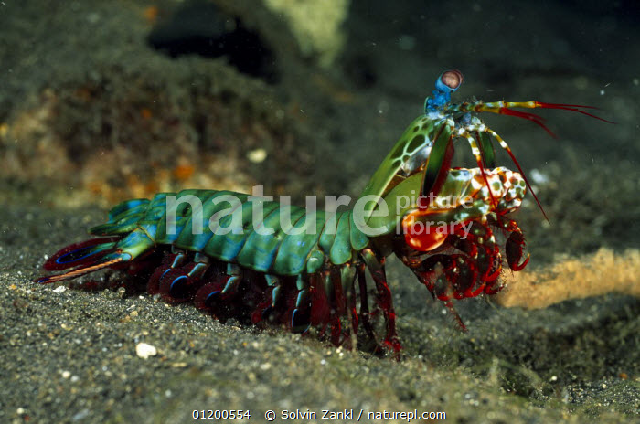

Fatos sobre o Stomatopoda
Info gerais
Odontodactylus scyllarus é o nome científico desse animal incrível que você está vendo, ele pertence a uma ordem de crustáceos marinhos chamados de Stomatopoda, que tem como uma de suas principais caracterisca a segunda pata torácica, que lembra a de um louva-a-deus.
| Reino: | Animalia |
| Filo: | Arthtopoda |
| Subfilo: | Crustacea |
| Classe: | Melacostraca |
| Subclasse: | Holocarida |
| Ordem: | Stomatopoda |
Soco
A lagosta-boxeadora é o terror dos coitados moluscos que tiverem milhões de anos para desenvolver uma super defesa pois nossa querida lagosta desenvolveu um super ataque.
Olhos
Ultravioleta e infravermelho